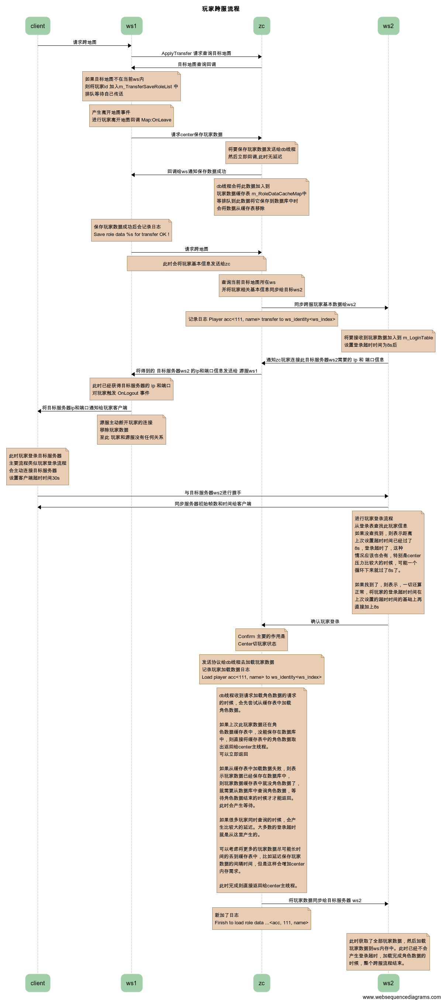

<!--
title 玩家跨服流程
client->ws1: 请求跨地图
ws1->zc: ApplyTransfer 请求查询目标地图
zc->ws1: 目标地图查询回调

note over ws1
如果目标地图不在当前ws内
则将玩家id 加入m_TransferSaveRoleList 中
排队等待自己传送
end note

note over ws1
产生离开地图事件
进行玩家离开地图回调 Map:OnLeave
end note

ws1->zc: 请求center保存玩家数据
note over zc
将要保存玩家数据发送给db线程
然后立即回调,此时无延迟
end note
zc->ws1: 回调给ws通知保存数据成功
note over zc
db线程会将此数据加入到
玩家数据缓存表 m_RoleDataCacheMap中
等排队到此数据将它保存到数据库中时
会将数据从缓存表移除
end note

note over ws1
保存玩家数据成功后会记录日志
Save role data %s for transfer OK !
end note

ws1->zc: 请求跨地图
note over ws1,zc: 此时会将玩家基本信息发送给zc
note over zc
查询当前目标地图所在ws
并将玩家相关基本信息同步给目标ws2
end note
zc->ws2: 同步跨服玩家基本数据给ws2
note over zc: 记录日志 Player acc<111, name> transfer to ws_identity<ws_index>
note over ws2
将要接收到玩家数据加入到 m_LoginTable
设置登录超时时间为8s后
end note
ws2->zc:通知zc玩家连接此目标服务器ws2需要的 ip 和 端口信息
zc->ws1: 将得到的 目标服务器ws2 的ip和端口信息发送给 源服ws1
note over ws1
此时已经获得目标服务器的 ip 和端口
对玩家触发 OnLogout 事件
end note
ws1->client: 将目标服务器ip和端口通知给玩家客户端
note over ws1
源服主动断开玩家的连接
移除玩家数据
至此 玩家和源服没有任何关系
end note
note over client
此时玩家登录目标服务器
主要流程类似玩家登录流程
会主动连接目标服务器
设置客户端超时时间30s
end note
client->ws2: 与目标服务器ws2进行握手
ws2->client: 同步服务器初始帧数和时间给客户端
note over ws2
进行玩家登录流程
从登录表查找此玩家信息
如果没查找到，则表示距离
上次设置超时时间已经过了
8s，登录超时了，这种
情况应该也会有，特别是center
压力比较大的时候，可能一个
循环下来就过了8s了。

如果找到了，则表示，一切还算
正常，将玩家的登录超时时间在
上次设置的超时时间的基础上再
直接加上8s
end note

ws2->zc: 确认玩家登录
note over zc
Confirm 主要的作用是
Center切玩家状态
end note
note over zc
发送协议给db线程去加载玩家数据
记录玩家加载数据日志
Load player acc<111, name> to ws_identity<ws_index>
end note

note over zc
db线程收到请求加载角色数据的请求
的时候，会先尝试从缓存表中加载
角色数据。

如果上次此玩家数据还在角
色数据缓存表中，没能保存在数据库
中，则直接将缓存表中的角色数据取
出返回给center主线程。
可以立即返回

如果从缓存表中加载数据失败，则表
示玩家数据已经保存在数据库中，
则玩家数据缓存表中就没角色数据了，
就需要从数据库中查询角色数据，等
待角色数据结束的时候才才能返回。
此时会产生等待。

如果很多玩家同时查询的时候，会产
生比较大的延迟。大多数的登录超时
就是从这里产生的。

可以考虑将更多的玩家数据尽可能长时
间的丢到缓存表中，比如延迟保存玩家
数据的间隔时间，但是这样会增加center
内存需求。

此时完成则直接返回给center主线程。
end note

zc->ws2: 将玩家数据同步给目标服务器 ws2

note over zc
新加了日志
Finish to load role data ...<acc, 111, name>
end note

note over ws2
此时获取了全部玩家数据，然后加载
玩家数据到ws内存中。此时已经不会
产生登录超时，加载完成角色数据的
时候，整个跨服流程结束。
end note

https://www.websequencediagrams.com
-->